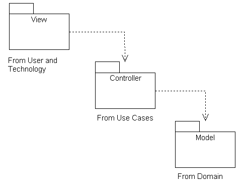

is the team responsible for designing the architect of the software
different from the team that develops the software? if so, wouldn't it make
sense to make the architect team also the development team since they have
a better understanding of the software?
I agree.
But some organizations do have an architecture team but I feel that they
need to also be involved in the other activities of software development.
One structure that may work well -- there is evidence for this -- is
to have a designated architect on (or leading) the development team. This
would be someone with much relevant experience of the type of
application being developed.
So, is a package diagram just a way to a) group classes you discovered in
the domain model, b) group UI objects that you can intuit from your
requirements/diagrams, and c) start grouping/talking about non-abstract
concepts involved in the system (such as databases and their interfaces)?
Well put! One tiny correction. Most of the UI classes will be determined
by the UI framework you have adopted. And, yes, if know the framework
they will be obvious/intuitive.
Why do we need to organize projects into packages if we create a domain
model and a SSD? What further does a package tell us?
Packages are a way of controlling complexity in a large project.
A way of separating the causes of change from each other.
You can produce code that works without following the standard layers.
This is OK with small projects -- a dozen simple use cases,
one user interface, and less than
6 classes in the domain, perhaps.
On the other hand you have to follow the packages used
in the platform you are using.
I've just reviewed a project with about a dozen use cases and a domain
model with 3 classes. The architecture follows the 'mudball' with
everything
inside the UI package... Every class in the code is derived from
Yaday.Yada.UI.Web.Page. In the code for each such page, each button is
linked
to a method in the corresponding class... and contains the SQL commands
for
accessing and updating the database. Each one contains almost identical
code!
If the data base changes, every file will have to be changed. If
a new use case is added, any of the existing data base commands could be
broken.
As the department methodologist I would like to see the code rewritten
to fit the three layers. Otherwise, I'm sure it will be an unmaintainable
mess
in a year or two. But -- it works, so as the department pragmatist,
I think I will suggest that it be refactored later rather than holding up
the project now.
A package is a folder for filing your project files. Just like a folder
for organizing a term project.
It contains files and lets you find the right one quickly. Packages
organize artifacts. That's all.
We use a package diagram to plan the organization of our project artifacts.
And in Java
each source code file is put in a package. In C++ you use namespaces in
the same way.
relaxed layered architecture?
In the strict architecture the dependencies go between adjacent layers
only. In the 3 lay model
this means that the user interface is not permitted to us classes in the
technical services layer.
Either. They are independent. One is about the world out side your
software.
The other is about how you are going to organize your project. You need to
think about it
before you start to design classes inside the code, not outside in the real
world.
Note: a complex domain model may itself by divided into packages but this
is not
a Layered Architecture.
How many type of package diagram does the UML have? as far as I know are
two of them, such as: class package diagram and detail package diagram.
One.
All package diagrams look alike. Think folders in windowed operating
system. They are a visual
way of organizing a large model. You can use packages to organize ANY UML
model. For example
if you have 100 use cases you might be able to split them into 10 folders
each with a related
set of 10 use cases. You can also package a large domain model into
sub-domains. and so on.
The commonest use is to organize the design classes into closely related
(communicating, collaborating)
classes.
The traditional way to do this is called a Layered Architecture (LA for
short).
The text lists a section of benefits for Design with Layers, are there any
notable drawbacks in Design with Layers?
It feels unnatural at first... I guess it doesn't click until you've used
it for a while. This is
the big drawback to Layers: motivating their use. Until you've done it
it doesn't seem to have value.
Sanity. Being able to change the design quickly and safely.
What should be included inside of packages? Will it just be the
related classes you would use in coding the system/project?
This is a pretty good description of what a package is: a collection of
related classes.
However it is normal to group related packages into a package
in a logical architecture.
The UML also lets you
- group related use cases into a (use case) package.
- group related components into a package.
- group related nodes (I guess) into a physical package.
Are there any other tools besides package diagrams to show the logical
architecture of a system?
UML inherited the package notation from PS and Mac Graphic User
Interfaces... and
so it is essentially universal to show a collection of related classes as
a package and to allow packages to be collected into larger packages etc.
The use of a dashed arrow is UML specific and many would say backwards!
When a piece of code uses another piece of code, they are coupled.
Example: using a global variable.
Example: calling a function in a class.
The term was invented in the 1970's in reaction to horrible
problems with FORTRAN programs.
Also know as a dependency -- see below.
If anything in package A makes use of something in package B then you need
a
dashed line from A to B. But you only need one line.
Simple test: does A have something that has the name of something in B.
Example dependency: In package A class C{ ...... B b; ...}.
For examples in C++ of dependencies between classes see
[ Dependency in uml1 ]
in my CS202 notes.
The connection or dependencies (- - - - >) between two or more packages affect
the SSD model when the packages are modified or changed.
In general, the way you package the design is about the inside of the
software and the SSD is about the external behavior of the software.
Repackaging shouldn't change the SSD and the SSD shouldn't change
the packaging of the design.
But if you use the standard pattern of splitting user interface
classes from the rest then the arrows in the SSD flow along
the dependencies between the user interface and the other packages.
Notice: good packaging is stable packaging.
How do you use System Operations, SSDs, and Layers together?
Each System operation is found in a SSD (or is an obvious step in a
simple use case). You take this operation and look for classes
that handle it. Then it gets complex ... we will spend several weeks
on it -- no time for a good summary now. Briefly -- the content
of each package develops as each SSD is handled but the packages
shouldn't change too much if you follow the books advice.
How much data a package should contain?
At least one item I guess -- though you might have one or two empty
packages at the start of a project.
On the other hand when there is so much in a package that you can't draw a
diagram of the contents on a black board or a sheet of paper then you
need to divide it into subpackages.
Not in theory.
In practice -- Keep It Simple!
in object oriented design it is good practice to separate for example your
UI-Classes from your main-architecture and system-interface, so I'm i to
understand that everything all interfaces must be prototyped before
development starts?
A Package diagram tells you a lot about what can be prototyped separately.
Splitting the UI from Domain lets you prototype a stable user interface
and link it to the Domain/services layer later.
Splitting off the technical services let you debug your understanding of
the technology without worrying about the use cases and user interfaces.
But NO: you can even work in parallel in all the packages, and you can
have different teams working in parallel. So you don't have to
"complete a package" before tackling another one. If something is
missing from another package -- put in a stub class/method to fake it!
Application Logic is how the program is supposed to work -- the sequence
of events inside the software that are correct and desirable -- but
without reference to any particular technology.
Many use cases have a complex mixture of scenarios. Application logic
is about navigating these. IT is also about ensuring that the Business
Rules (Domain Rules) are implemented.
Example TBA.
The Logical Architecture
depicts technical services as a vertical implementation after UI and
domains. Wouldn't be more beneficial for the sake of any implementation to
include Tech services horizontally? The model will be more dynamic.
The arrows do not show sequence. They show dependencies -- what happens if you change something.
In the UP you would work on all layers at
a time because adding
a new feature/scenario/use case may involve new technical services, domain
elements, and user interfaces.
More: the arrows show dependency, so if the technical services change then
we may be forced to change
the domain and user interface. If the domain changes then the user
interface may change..... however we can
work on the user interface without disturbing the existing classes in the
domain layer, and
work on the domain without risk of breaking the technical services.
Can you show an example of how to break up the point of sale into packages,
not the end result, but the process of figuring it out?
No.
Right now -- follow the masters and do the simplest layered architecture
that could
possible work.
We will come back to this later in the book.
Use a meeting. Do it iteratively as you
elaborate the design and learn about the problem.
The number is not important. What is
important is avoiding "mud balls" of classes that do everything
that you dare not be changed.
Is the concept of layers similar to the 7 networking layers of the OSI
model (i.e. physical, data link, network, etc)?
Yes.
Is a layer like a controller in a MVC architecture?
Controllers connect the user interface to the domain layer.
They know about scenarios and use case logic. The use "model"
(our domain layer).... See
[ patterns.html#MVC ]
for details on MVC.
You can put controllers in a special "Application layer" (on page 203)
between UI and Domain.
Some pundits insist that control objects are a snare and delusion.
You can make the case that they might, in a simple system,
live in a sub-package in the UI or Domain layer.
The diagram in Figure 13.2 shows layers that are connected directly to the
layer below it and it also shows layers that skip layers, so would this be
a relaxed layer architecture, and why does it matter?
Yes -- skipping a layer makes it relaxed.
I'm relaxed about using a relaxed hierarchy. I figure only
purists will worry about skipping a level.
But I have no evidence to back up my hunch.
The book lists three layers. Do the classes, packages, and subsystems
generally fit into these three layers, or are there usually other layers
added to these three?
The three layer model should be enough for projects in this class but their are more complex
packaging schemes for more complex models and problems. Turn to page 203,
Figure 13.4 for the kind
of organization you might use in a large complex project. I would guess
that every project
has its own architecture....
By the way: the packages/folders in a layer only contain classes or
sub-folders/sub-packages.
The author says that the introduction to OOA/D focuses on the core
application logic layer, with some secondary discussion of the other
layers. What are those other layers?
The problems of handling Java Swing on the web or a Web Services
interface, and a command line administration package would all be
in the User Interface layer.
Problems about data bases, external computers, networking, logging errors
should be solved in the Technical Service layer.
Also see the layers on page 203!
The book mentions some of the common layers as UI, Application, Domain,
Business Infrastructure, Technical Services, and Foundation. What are some
of the less common ones?
I think Larman is modest.... this architecture is pretty complete.
On page 204, Larman talks about how object responsibilities in a layer
should not mix responsibilities from other layers. This sees like a
mistake that can be easily made, and I was wondering if you could provide
more examples of such how such a mistake can be made, and how can we can
better avoid them?
It is a mistake made when you treat a large project as a small one. Or when
you rush to code without thought
of the future.
It takes discipline to stop and think about the future development of a
project when you are
struggling with the first use case scenario.... but if you do this you can
make the project
much easier to develop and easier to maintain.
We've been separating the logical structure from the physical structure
since the 1970's. It
goes back the David Parnas and predates objects. I use it whenever I can.
Key point: separate
your concerns. Hide things that vary from other parts. .... We will do
more on this.
Most languages provide ways to collect classes into packages.
See next question.
What are some examples of packages (namespaces)in c++, Java, c# etc?
In C++: "std" is a package! As in
using namespace std;
So is a file that contains several classes....
Java: java.util.*, etc. are packages and declared as packages,
[ index.html ]
Any directory that contains some classes can act as a namespace or
package. The source code files must include a "package" declaration to
join the namespace/package. They must also "import" any other
packages/classes they need to use. There is a good explanation
[ chapter3.html ]
at Source Forge. Also check out
[ packages.html ]
Sun's Java Tutorial.
C#: System, System.IO, etc.
The book states not to show external resources as the bottom layer and
references LDAP directory services or MySQL databases as examples of these.
Does this include hardware dependencies, drivers or other OS dependencies?
Meaning that we do not need to show such resources as the bottom layer as
well?
Is there a portion of UML that diagrams external resources since we don't
put them here?
The hardware device might appear as an actor in a use case. It would not
be software and so not be in the logical architecture.
I would not show them in the architecture. I would hide the hardware
behind a classes that
provide the rest of the software with the API they need and use the drivers
to make the interface work.
I'd put these classes is a special package inside the Technical Services
Package and name it after
the services it provides -- not the name of the device.
Why: devices change but the program must go on...
You can use UML to design data bases -- see CSCI372. Class diagrams
work quite well when
modeling entity-relation diagrams.
There is even a horribly detailed profile for using UML to model data bases.
However objected oriented software is easier
to maintain and needs a different structure to the data base!
Interfacing it with a data base we are wise to separate the data base
commands
from the objects we want to implement. A system that uses Oracle today,
may well be using MySQL
tomorrow. We don't want to be hacking our domain logic when this
happens.
It is very painful to come across a clump of SQL statements embedded in
several classes, and all doing
similar things in the same way. They should be placed in a set of classes that
provide a
logical interface to the rest of the software.
Could you please explain the diagram (Figure 13.7) on page 208 titled
"Mixing views of the architecture?
I found this confusing. I think Larman is pointing out a mistake
he has seen people make when consulting and/or training. The
mistake is showing the internal architecture of the software
(classes)
with the external systems architecture (hardware -> deployment).
He prefers (and I agree) that we are wise to hide the hardware
by special classes that are easy to change without effecting the
rest of the system. This is one of many examples of Parnas's
Principle of Information Hiding. We try and put each requirement
and design decision in a separate module.
Persistent data can be viewed as a sub-domain of the Domain layer. Can you
elaborate further on this idea? By following the example it does not appear
to be very clean. There is a lot of crossing lines going many different
directions.
The domain layer stores data about the domain. Some of this data stays
after the program stops running.
Or is shared between many programs. This means it must be "persistent".
These days we usually
put it in a data base. As a program runs it changes the domain and nearly
all of this is recorded in
the data base. Their will be many interactions -- unavoidable -- between the
data structures in the
program and the data in the data base.
MVC splits a program into three types of class. The View classes
understand how to present data
to the users. The Controller classes get commands from the View and pass
them to the Model. They
tend to be pretty trivial. The Model keeps track of the state of the
domain with the View
being updated as needed.

It is built into several popular GUI frameworks such as Struts. We
have used MVC in the department for student projects for the last 10 years.
Somewhere on the net there is a blues about MVC....
[ watch?v=YYvOGPMLVDo ]
(1) Please expand on the relationship between the Domain Layer and the
Domain Model.
(2) Could you explain a little more on the relationship between the domain
layer and domain model.
The Domain model inspires the classes in the domain layer. The domain
layer reflects the domain model to an extent. Some associations and
most attributes in the domain model will reappear in the
domain layer class diagrams.
The domain model has no operations but the design classes do.
An SSD is bridge between a use case scenario and the
design of a set of objects that support the use case.
- Select use case to analyze
- Select scenario in use case
- Express scenario as SSD and so get a set of operations
- Select an interesting operation and note any interesting pre/post
conditions
- Design an interaction that implements the operation
- Place operations and data in interaction into the Design Class Diagram
- Repeat with another operation from the SSD
- Code (and correct previous mistakes)
- Test (and correct previous mistakes)
- Repeat
Connecting with SSD, I think the UML package diagram of the logical
architecture illustrate the "System", the inner organization of the system,
is that right?
Close..... the 'System' in the SSD will mainly show the Domain
Package classes.... plus some of the Technical Services layer.
Are there other layers, besides UI, Domain, and technical services, that we
should be aware of?
Yes.... and they are all on page 203. For this course, page 203
has enough layers. More than you will need in your projects! I hope
it will be enough for most "real" projects you work on.
Is a strict layered architecture better than a relaxed layered
architecture?
A relaxed hierarchy has the problem that the upper layers can know
about the details of the lower levels. The programmers have to
master ALL the levels below the one the are working in. And a
low level change can cause changes in the top level. In turn,
this means the lower levels have to be more stable.
Why isn't strict layer architecture not used in information systems design.
I find strict hierarchies too restricted. Sometimes you
need a User Interface class to call a method in a class that provides
a service without changing any domain layer classes, for example.
It gets worse when there are 6 or 7 layers as in the packages on
page 203.
Is it recommended that a package diagram be constructed for every coding
project?
Good question!
What is important is to stop and decide whether your project is complex
enough to demand a package diagram. If in doubt, do it! Perhaps
draw a BIG poster and put classes on sticky notes inside the packages?
I don't in most of my programming these days because I have the packaging
in my head -- and I'm sorry to anybody who has to work with it. It is
a mess. Exception -- programs for classes -- I duck the issue because
I'm trying to teach coding. It is only in this class that I do packages!
Is it better for packages to have high cohesion or low cohesion in a
project?
The classes in a package should be more cohesive
(sharing a common theme) than classes across packages.
When it comes to grouping classes within a package, how much in common
would they need to have to be put into the same package?
Typically a lot of associations should be inside the package rather than
outside.
Oddly modern architecture stresses not the commonality in a package so much
as what it contributes to the whole: does it define how the user likes to
work?
does it understand the logic the user uses? Does it know all about the
data base
and SQL? We would split these up -- because this seems to work well and
give
sane maintenance programmers:-)
When using the Domain Model as inspiration for the Domain Layer, can the
names be the same?
YES! The names of classes in the domain model should be identical to
some of the names of classes in the Domain Layer (design).
Sadly the two models are never identical...
As the chapter advances, the author uses more examples of how Java would
implement the code. Is Java inherently easier to use with the Logical
Architecture designs, and is the world moving to a point where Java is
being embraced more then other languages for implementation of a system.
The book uses Java because it is pure object-oriented language.
You will get different answers from Sun(Java) and Microsoft(C#) and I don't
have any unbiased evidence one way or the other.
Also: raw C++ doesn't have a good GUI/WWW interface
but it does have a speed advantage. Hence tends to be used for systems
programming rather than applications.
And what about: PERL, PHP, JSP, ASP, ad inf?
Good question! Class discussion!
- You have a class that doesn't fit in any package!
- See if the class should be split up.
- Invent a new package for it... and quickly look to see if
classes in other packages could be moved to the new package.
- The team working on one package produce classes that don't play
well with classes done by other teams doing other packages.
- Don't give a package to a separate team.
- Each dependent package needs a representative working with
the other team.
- Get the code from different teams integrated into the whole
as soon as possible. Integrate and TEST:
- EVERY NIGHT (Microsoft).
- each week (XP)
- Every two weeks...
- Performance may take a hit when there are a lot of small classes.
- But it won't be a big hit....
- Badly chosen layers can lead to hard to diagnose bugs.
- You may spend too much time reorganizing the packages.
These tend to contain
classes that the project team is not developing -- they already
exist in a library or "off the shelf" package. All you can do
is hide them behind an interface.
Looking to the domain model is supposed to help with naming classes and
developing the application logic layer. Couldn't you just pull out any
nouns that are in the model and make those your classes; and even further,
take the verbs and make those the attributes?
This was the great idea of the early 1980's.
This will (normally) give you a bloated domain layer with the wrong
attributes
and useless associations.
What is the difference between a tier and a layer? Can the terms be used
interchangeably.
Use "tier" to describe how software is running on different machines:
client
vs server for example. Use "layer" when talking about which class
knows about which other classes.
What is your technique when doing agile modeling?
I mostly work alone so I don't need to communicate my analysis and
design to others. So I use UML diagrams to explore the problems
and solutions -- using a pencil+paper+eraser mainly. Sometimes
pen and paper. No white board:-( I have yet to find a light
enough computer tool to be worth me using it.
I use computerized tools for presenting ideas in class and
other presentations -- for example presenting research at seminars
and conferences. Also in magazines and journals.
The author suggests using an UML tool capable of generating diagrams from
code. Any suggestions? I am not aware of such tools.
IBM Rational Rose does this. So does Umbrello on our Linux machines.
But usually reverse engineering can not
supply explanations of why the code
is the way it is. I've not read about anybody using it.
From the Google Group "UML Forum"
David Hickerson Feb 12th 2009
IBM Rational UML products have a reverse engineering tool that works pretty well. Also IBM Telelogic Rhapsody has one, but I haven't tried it yet, though I use the product. I would give either of those a go.
Also, reversing the code into a UML model doesn't create the diagrams. You will have to manually drag out the pieces onto the drawing, however the tools should draw all of the relationship lines for you. At least in the class diagrams they will. The forward and reversing tools I used in the past, only look at the outer shell of the code and not the method algorithms, so collaboration and sequence diagrams were not generated. That was about 4 years ago those products may do better now.
Good luck with project. I suggest that you spend some time and really learn UML, it is the industry standard and the way Software Engineers communicate designs.
What is the difference between the static and dynamic model. The book says
that the dynamic view is more important. Why? The static seems to have more
info and it seems as if all of these models seem to duplicate the same
information.
Yes: the static model is a summary of the dynamic model and as a result
is a lot more useful for finding out what attributes and operations
are where.
The dynamic model shows you sequences of events inside the system.
The static model gives a clear summary of the possible messages.
It seems like the only reasonable time to do Dynamic Modeling is in
parallel with Static Modeling. Why would one try to split the concepts
apart?
Yes you will be doing both types of diagram at once.
Why have two diagrams -- largely because it works better than
either alone. The static view summarizes all the interactions
you have analyzed -- so you can, for example, see in the
static model that a particular
operation is already part of the growing design. But only the
dynamic diagrams let you answer the questions -- why did you
think we needed this operation? and why in this
class?
Would you suggest we use Class Responsibility Collaboration cards for our
project?
Only as an experiment. I like cards but I've never got comfortable
with the CRC format.
There is more about CRC later in these notes -- with links and such to
more info if you want to experiment.
Yes -- to be more precise -- I know a lot people have written
good things about them:
[ wiki?CrcCard ]
[ CRC_cards ]
but I have not seen any surveys showing lots of "real" projects
using them. Neither has there much recent activity in UseNet/GoogleGroups.
I haven't seen any surveys on the different
techniques in use "out there".
Good question -- one that struck me when I saw a demo of
how they are used at OOPSLA2000. I didn't think they helped much.
So use them if you want or your organization likes them. They are not
required in this class.
CRC could we go over some other examples to get a better idea?
I don't want to spend class time seeing that
- They are not on the final, quizzes, or project deliverables.
- Google and other Image search engines find many examples.
- If you want advice try
[ 5123 ]
They are listed inside the front cover of your text and in
[ patterns.html#GRASP -- General Responsibility Assignment Software Patterns ]
on this web site.
How do you become skilled in 'thinking and designing in objects' vs just
knowing the notation?
Practice -- this course starts the learning...